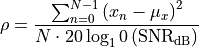

sig¶
A module for manipulating and processing NMR signals.
- nmrespy.sig.add_noise(fid: numpy.ndarray, snr: float, decibels: bool = True) numpy.ndarray[source]¶
Add Gaussian white noise noise to an FID.
- Parameters:
fid – Noiseless FID.
snr – The signal-to-noise ratio. The smaller this value, the greater the variance of the noise.
decibels – If True, the snr is taken to be in units of decibels. If False, it is taken to be simply the ratio of the singal power and noise power.
See also
- nmrespy.sig.baseline_correction(spectrum: numpy.ndarray, mask: numpy.ndarray | None = None, min_length: int = 50) Tuple[numpy.ndarray, dict][source]¶
Apply baseline correction to a 1D dataset.
The algorithm applied is desribed in [1]. This uses an implementation provided by pybaselines.
- Parameters:
spectrum – Spectrum to apply baseline correction to.
mask –
Should be either:
None: the points which comprise noise are predicted automaticallyA boolean array with the same size as
spectrum.Trueindicates that a particular point comprises baseline.Falseindicates that a point comprises a peak.
min_length – from pybaselines: Any region of consecutive baseline points less than
min_lengthis considered to be a false positive and all points in the region are converted to peak points. A higher min_length ensures less points are falsely assigned as baseline points.
- Returns:
fixed_spectrum – The baseline-corrected spectrum.
params – A dictionary with the items:
"mask"A boolean array designating baseline points asTrueand peak points asFalse."baseline"The computed baseline. Note thatfixed_spectrumis computed viaspectrum - baseline.
References
- nmrespy.sig.convdta(data: numpy.ndarray, grpdly: float) numpy.ndarray[source]¶
Remove the digital filter from time-domain Bruker data.
This function is inspired by nmrglue.fileio.bruker.rm_dig_filter.
- Parameters:
data – Time-domain data to process.
grpdly – Group delay.
- nmrespy.sig.exp_apodisation(fid: numpy.ndarray, k: float, axes: Iterable[int] | None = None) numpy.ndarray[source]¶
Apply exponential apodisation to an FID.
The FID is multiplied by
np.exp(-k * np.linspace(0, 1, n))in each dimension specified byaxes, wherenis the size of each dimension.- Parameters:
fid – FID to process.
k – Line-broadening factor.
axes – The axes to apply the apodiisation over. If
None, all axes are apodised.
- nmrespy.sig.ft(fid: numpy.ndarray, axes: Iterable[int] | int | None = None, flip: bool = True) numpy.ndarray[source]¶
Fourier transformation with optional spectrum flipping.
It is conventional in NMR to plot spectra from high to low going left to right/down to up. This function utilises the numpy.fft module.
- Parameters:
fid – Time-domain data.
axes – The axes to apply Fourier Transformation to. By default (
None), FT is applied to all axes. If an int, FT will only be applied to the relevant axis. If a list of ints, FT will be applied to this subset of axes.flip – Whether or not to flip the Fourier Transform of fid in each dimension.
- nmrespy.sig.ift(spectrum: numpy.ndarray, axes: Iterable[int] | int | None = None, flip: bool = True) numpy.ndarray[source]¶
Inverse Fourier Transform a spectrum.
This function utilises the numpy.fft module.
- Parameters:
spectrum (numpy.ndarray) – Spectrum
axes – The axes to apply IFT to. By default (
None), IFT is applied to all axes. If an int, IFT will only be applied to the relevant axis. If a list of ints, IFT will be applied to this subset of axes.flip (bool, default: True) – Whether or not to flip
spectrumin each dimension prior to Inverse Fourier Transform.
- nmrespy.sig.make_noise(fid: numpy.ndarray, snr: float, decibels: bool = True) numpy.ndarray[source]¶
Generate an array of white Guassian complex noise.
The noise will be created with zero mean and a variance that abides by the desired SNR, in accordance with the FID provided.
- Parameters:
fid – Noiseless FID.
snr – The signal-to-noise ratio.
decibels – If True, the snr is taken to be in units of decibels. If False, it is taken to be simply the ratio of the singal power and noise power.
- Return type:
noise
Notes
Noise variance is given by:

See also
- nmrespy.sig.make_virtual_echo(data: numpy.ndarray, twodim_dtype: str | None = None) numpy.ndarray[source]¶
Generate a virtual echo [2] from a time-domain signal.
A vitrual echo is a signal with a purely real Fourier-Tranform.
- Parameters:
data – The data to construct the virtual echo from. If the data comprises a pair of amplitude/phase modulated signals, these should be stored in a single 3D array with
shape[0] == 2, such thatdata[0]is the cos/p signal, anddata[1]is the sin/n signal.twodim_dtype –
If the data is 2D, this parameter specifies the way to process the data. Allowed options are:
"hyper": The data is hypercomplex. Virtual echo is constructedalong the second axis.
"amp": The data comprises an amplitude-modulated pair."phase": The data comprises a phase-modulated pair.
References
- nmrespy.sig.manual_phase_data(spectrum: numpy.ndarray, max_p1: Iterable[float] | None = None) Tuple[Iterable[float] | None, Iterable[float] | None][source]¶
Manual phase correction using a Graphical User Interface.
Note
Only 1D spectral data is currently supported.
- Parameters:
spectrum – Spectral data of interest.
max_p1 – Specifies the range of first-order phases permitted. Bounds are set as
[-max_p1, max_p1].
- Returns:
p0 – Zero-order phase correction in each dimension, in radians. If the user chooses to cancel rather than save, this is set to
None.p1 – First-order phase correction in each dimension, in radians. If the user chooses to cancel rather than save, this is set to
None.
- nmrespy.sig.phase(data: numpy.ndarray, p0: Iterable[float], p1: Iterable[float], pivot: Iterable[float | int] | None = None) numpy.ndarray[source]¶
Apply a linear phase correction to a signal.
- Parameters:
data – Data to be phased.
p0 – Zero-order phase correction in each dimension, in radians.
p1 – First-order phase correction in each dimension, in radians.
pivot – Index of the pivot in each dimension. If
None, the pivot will be0in each dimension.
- nmrespy.sig.proc_amp_modulated(data: numpy.ndarray) numpy.ndarray[source]¶
Generate a frequency-discrimiated signal from amplitude-modulated 2D FIDs.
- Parameters:
data – cos-modulated signal and sin-modulated signal, stored in a 3D numpy array, such that
data[0]is the the cos signal anddata[1]is the sin signal.- Returns:
spectrum – Frequency-discrimiated spectrum.
- Return type:
np.ndarray
- nmrespy.sig.proc_phase_modulated(data: numpy.ndarray) numpy.ndarray[source]¶
Process phase modulated 2D FIDs.
This function generates the set of spectra corresponding to the processing protocol outlined in [3].
- Parameters:
data – P-type signal and N-type signal, stored in a 3D numpy array, such that
data[0]is the the P signal anddata[1]is the N signal.- Returns:
3D array with
spectra.shape[0] == 4. The sub-arrays in axis 0 correspond to the following signals:spectra[0]: RRspectra[1]: RIspectra[2]: IRspectra[3]: II
- Return type:
spectra
References
- nmrespy.sig.sinebell_apodisation(fid: numpy.ndarray, axes: Iterable[int] | None = None) numpy.ndarray[source]¶
Apply sine-bell apodisation to an FID.
The FID is multiplied by
np.exp(-k * np.linspace(0, 1, n))in each dimension specified byaxes, wherenis the size of each dimension.Warning
This is not intended for manipulating the FID prior to estimation.
- Parameters:
fid – FID to process.
axes – The axes to apply the apodiisation over. If
None, all axes are apodised.